손해평가사 (2019-06-15 기출문제)
1과목: 상법(보험편)
1. 보험계약에 관한 설명으로 옳지 않은 것은? (다툼이 있으면 판례에 따름)
- 보험계약은 당사자 일방이 약정한 보험료를 지급하고, 상대방은 일정한 보험금이나 그 밖의 급여를 지급할 것을 약정함으로써 효력이 발생한다.
- 보험계약은 당사자 사이의 청약과 승낙의 의사합치에 의하여 성립한다.
- 보험계약은 요물계약이다.
- 보험계약은 부합계약의 일종이다.
(정답률: 74%)

2. 상법상 보험약관의 교부ㆍ설명의무에 관한 내용으로 옳은 것은? (다툼이 있으면 판례에 따름)
- 보험약관이 계약당사자에 대하여 구속력을 갖는 것은 계약당사자 사이에서 계약내용에 포함시키기로 합의하였기 때문이다.
- 보험계약이 성립한 후 3월 이내에 보험계약자는 보험자의 보험약관 교부ㆍ설명의무 위반을 이유로 그 계약을 철회할 수 있다.
- 보험자의 보험약관 교부ㆍ설명의무 위반시 보험계약자는 해당 계약을 소급해서 무효로 할 수 있는데, 그 권리의 행사시점은 보험사고 발생시부터이다.
- 보험자는 보험계약을 체결한 후에 보험계약자에게 중요한 사항을 설명하여야 한다.
(정답률: 62%)
3. 타인을 위한 보험에 관한 설명으로 옳지 않은 것은?
- 보험계약자는 위임을 받아 특정의 타인을 위하여 보험계약을 체결할 수 있다.
- 보험계약자는 위임을 받지 아니하고 불특정의 타인을 위하여 보험계약을 체결할 수 있다.
- 타인을 위한 손해보험계약의 경우에 그 타인의 위임이 없는 때에는 이를 보험자에게 고지하여야 한다.
- 타인을 위한 보험계약의 경우에 그 타인은 수익의 의사표시를 하여야 그 계약의 이익을 받게 된다.
(정답률: 75%)
4. 보험증권에 관한 설명으로 옳지 않은 것은?
- 보험자는 보험계약이 성립한 때에는 지체없이 보험증권을 작성하여 보험계약자에게 교부하여야 한다. 그러나 보험계약자가 보험료의 전부 또는 최초의 보험료를 지급하지 아니한 때에는 그러하지 아니하다.
- 기존의 보험계약을 연장하거나 변경한 경우에 보험자는 그 보험증권에 그 사실을 기재함으로써 보험증권의 교부에 갈음할 수 없다.
- 보험계약의 당사자는 보험증권의 교부가 있은 날로부터 일정한 기간내에 한하여 그 증권내용의 정부에 관한 이의를 할 수 있음을 약정할 수 있다. 이 기간은 1월을 내리지 못한다.
- 보험증권을 멸실 또는 현저하게 훼손한 때에는 보험계약자는 보험자에 대하여 증권의 재교부를 청구할 수 있다. 그 증권작성의 비용은 보험계약자의 부담으로 한다.
(정답률: 77%)
5. 보험계약 등에 관한 설명으로 옳지 않은 것은?
- 보험계약은 그 계약전의 어느 시기를 보험기간의 시기로 할 수 있다.
- 보험계약당시에 보험사고가 이미 발생하였거나 또는 발생할 수 없는 것인 때에는 그 계약은 무효로 한다. 그러나 당사자 쌍방과 피보험자가 이를 알지 못한 때에는 그러하지 아니하다.
- 대리인에 의하여 보험계약을 체결한 경우에 대리인이 안 사유는 그 본인이 안 것과 동일한 것으로 한다.
- 최초보험료 지급지체에 따라 보험계약이 해지된 경우 보험계약자는 그 계약의 부활을 청구할 수 있다.
(정답률: 81%)
6. 보험대리상 등의 권한에 관한 설명으로 옳은 것은?
- 보험대리상은 보험계약자로부터 보험료를 수령할 권한이 없다.
- 보험대리상의 권한에 대한 일부 제한이 가능하고, 이 경우 보험자는 선의의 제3자에 대하여 대항할 수 있다.
- 보험대리상은 보험계약자에게 보험계약의 체결, 변경, 해지 등 보험계약에 관한 의사표시를 할 수 있는 권한이 있다.
- 보험대리상이 아니면서 특정한 보험자를 위하여 계속적으로 보험계약의 체결을 중개하는 자는 보험계약자로부터 고지를 수령할 수 있는 권한이 있다.
(정답률: 70%)
7. 보험계약에 관한 내용으로 옳은 것을 모두 고른 것은?
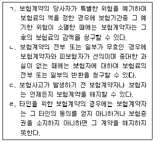
- ㄱ, ㄴ, ㄷ
- ㄱ, ㄴ, ㄹ
- ㄱ, ㄷ, ㄹ
- ㄴ, ㄷ, ㄹ
(정답률: 75%)
8. 고지의무 위반으로 인한 계약해지에 관한 내용으로 옳지 않은 것은?
- 보험자가 보험계약당시에 보험계약자나 피보험자의 고지의무 위반 사실을 경미한 과실로 알지 못했던 때라도 계약을 해지할 수 없다.
- 보험계약당시에 피보험자가 중대한 과실로 부실의 고지를 한 경우에 보험자는 해지권을 행사할 수 있다.
- 보험자가 보험계약당시에 보험계약자나 피보험자의 고지의무 위반 사실을 알았던 경우에는 계약을 해지할 수 없다.
- 보험계약당시에 보험계약자가 고의로 중요한 사항을 고지하지 아니한 경우 보험자는 해지권을 행사할 수 있다.
(정답률: 74%)
9. 다음 설명 중 옳은 것은?
- 상법상 보험계약자 또는 피보험자는 보험자가 서면으로 질문한 사항에 대하여만 답변하면 된다.
- 상법에 따르면 보험기간중에 보험계약자 등의 고의로 인하여 사고발생의 위험이 현저하게 증가된 때에는 보험자는 계약체결일로부터 3년 이내에 한하여 계약을 해지할 수 있다.
- 보험자는 보험금액의 지급에 관하여 약정기간이 없는 경우에는 보험사고 발생의 통지를 받은 후 지체없이 보험금액을 지급하여야 한다.
- 보험자가 파산의 선고를 받은 때에는 보험계약자는 계약을 해지할 수 있다.
(정답률: 65%)
10. 2년간 행사하지 아니하면 시효의 완성으로 소멸하는 것은 모두 몇 개인가?
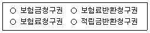
- 1개
- 2개
- 3개
- 4개
(정답률: 83%)
11. 다음 설명 중 옳은 것은?
- 손해보험계약의 보험자가 보험계약의 청약과 함께 보험료 상당액의 전부를 지급 받은 때에는 다른 약정이 없으면 2주 이내에 낙부의 통지를 발송하여야 한다.
- 손해보험계약의 보험자가 보험계약의 청약과 함께 보험료 상당액의 일부를 지급 받은 때에 상법이 정한 기간내에 낙부의 통지를 해태한 때에는 승낙한 것으로 추정한다.
- 손해보험계약의 보험자가 보험계약의 청약과 함께 보험료 상당액의 전부를 지급 받은 때에 다른 약정이 없으면 상법이 정한 기간내에 낙부의 통지를 해태한 때에는 승낙한 것으로 본다.
- 손해보험계약의 보험자가 청약과 함께 보험료 상당액의 전부를 받은 경우에 언제나 보험 계약상의 책임을 진다.
(정답률: 64%)
12. 가계보험의 약관조항으로 허용될 수 있는 것은?
- 약관설명의무 위반시 계약 성립일부터 1개월 이내에 보험계약자가 계약을 취소할 수 있도록 한 조항
- 보험증권의 교부가 있은 날로부터 2주 내에 한하여 그 증권내용의 정부에 관한 이의를 할 수 있도록 한 조항
- 해지환급금을 반환한 경우에도 그 계약의 부활을 청구할 수 있도록 한 조항
- 고지의무를 위반한 사실이 보험사고 발생에 영향을 미치지 아니하였음이 증명된 경우에도 보험자의 보험금지급 책임을 면하도록 한 조항
(정답률: 64%)
13. 다음 설명 중 옳지 않은 것은?
- 손해보험계약의 보험자는 보험사고로 인하여 생길 피보험자의 재산상의 손해를 보상할 책임이 있다.
- 손해보험증권에는 보험증권의 작성지와 그 작성년월일을 기재하여야 한다.
- 보험사고로 인하여 상실된 피보험자가 얻을 이익이나 보수는 당사자간에 다른 약정이 없으면 보험자가 보상할 손해액에 산입하지 아니한다.
- 집합된 물건을 일괄하여 보험의 목적으로 한 때에는 그 목적에 속한 물건이 보험기간중에 수시로 교체된 경우에도 보험계약의 체결시에 현존한 물건은 보험의 목적에 포함된 것으로 한다.
(정답률: 62%)
14. 초과보험에 관한 설명으로 옳지 않은 것은?
- 보험금액이 보험계약당시의 보험계약의 목적의 가액을 현저히 초과한 때를 말한다.
- 보험자 또는 보험계약자는 보험료와 보험금액의 감액을 청구할 수 있다.
- 보험료의 감액은 보험계약체결시에 소급하여 그 효력이 있으나 보험금액의 감액은 장래에 대하여만 그 효력이 있다.
- 보험계약자의 사기로 인하여 체결된 초과보험계약은 무효이며 보험자는 그 사실을 안 때 까지의 보험료를 청구할 수 있다.
(정답률: 67%)
15. 상법상 기평가보험과 미평가보험에 관한 설명으로 옳은 것은?
- 당사자간에 보험가액을 정하지 아니한 때에는 계약체결시의 가액을 보험가액으로 한다.
- 당자자간에 보험가액을 정한 때 그 가액이 사고발생시의 가액을 현저하게 초과할 때에는 사고발생시의 가액을 보험가액으로 한다.
- 당사자간에 보험가액을 정한 때에는 그 가액은 계약체결시의 가액으로 정한 것으로 추정한다.
- 당사자간에 보험가액을 정한 때에는 그 가액은 사고발생시의 가액을 정한 것으로 본다.
(정답률: 64%)
16. 피보험이익에 관한 설명으로 옳지 않은 것은?
- 우리 상법은 손해보험뿐만 아니라 인보험에서도 피보험이익이 있을 것을 요구한다.
- 상법은 피보험이익을 보험계약의 목적이라고 표현하며 보험의 목적과는 다르다.
- 밀수선이 압류되어 입을 경제적 손실은 피보험이익이 될 수 없다.
- 보험계약의 동일성을 판단하는 표준이 된다.
(정답률: 68%)
17. 상법상 당사자간에 다른 약정이 있으면 허용되는 것을 모두 고른 것은?
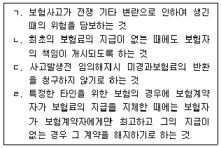
- ㄱ, ㄴ
- ㄴ, ㄷ
- ㄱ, ㄴ, ㄷ
- ㄱ, ㄷ, ㄹ
(정답률: 55%)
18. 중복보험에 관한 설명으로 옳은 것은?
- 동일한 보험계약의 목적과 동일한 사고에 관하여 수개의 보험계약이 동시에 또는 순차로 체결된 경우에 그 보험금액의 총액이 보험가액을 현저히 초과한 경우에만 상법상 중복보험에 해당한다.
- 동일한 보험계약의 목적과 동일한 사고에 관하여 수개의 보험계약을 체결하는 경우에는 보험계약자는 각 보험자에 대하여 각 보험계약의 내용을 통지하여야 한다.
- 중복보험의 경우 보험자 1인에 대한 피보험자의 권리의 포기는 다른 보험자의 권리의무에 영향을 미친다.
- 보험자는 보험가액의 한도에서 연대책임을 진다.
(정답률: 70%)
19. 다음 ( )에 들어갈 용어로 옳은 것은?
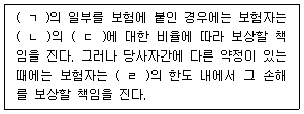
- ㄱ: 보험금액, ㄴ: 보험가액, ㄷ: 보험금액, ㄹ: 보험금액
- ㄱ: 보험금액, ㄴ: 보험금액, ㄷ: 보험가액, ㄹ: 보험가액
- ㄱ: 보험가액, ㄴ: 보험가액, ㄷ: 보험금액, ㄹ: 보험가액
- ㄱ: 보험가액, ㄴ: 보험금액, ㄷ: 보험가액, ㄹ: 보험금액
(정답률: 61%)
20. 손해액의 산정기준 등에 관한 설명으로 옳은 것은?
- 보험의 목적에 관하여 보험자가 부담할 손해가 생긴 경우에는 그 후 그 목적이 보험자가 부담하지 아니하는 보험사고의 발생으로 인하여 멸실된 때에도 보험자는 이미 생긴 손해를 보상할 책임을 면하지 못한다.
- 당사자간에 다른 약정이 있는 때에도 이득금지의 원칙상 신품가액에 의하여 손해액을 산정할 수는 없다.
- 보험자가 보상할 손해액은 보험계약이 체결된 때와 곳의 가액에 의하여 산정한다.
- 손해액의 산정에 관한 비용은 보험계약자의 부담으로 한다.
(정답률: 70%)
21. 다음 ( )에 들어갈 상법 규정으로 옳은 것은?
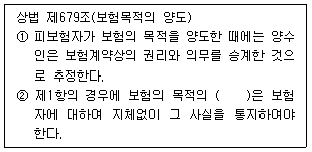
- 양도인
- 양수인
- 양도인과 양수인
- 양도인 또는 양수인
(정답률: 69%)
22. 손해방지의무 등에 관한 상법 규정의 설명으로 옳은 것은?
- 피보험자뿐만 아니라 보험계약자도 손해방지의무를 부담한다.
- 손해방지비용과 보상액의 합계액이 보험금액을 초과한 때에는 보험자의 지시에 의한 경우에만 보험자가 이를 부담한다.
- 상법은 피보험자는 보험자에 대하여 손해방지비용의 선급을 청구할 수 있다고 규정한다.
- 손해의 방지와 경감을 위하여 유익하였던 비용은 보험자가 이를 부담하지 않는다.
(정답률: 74%)
23. 제3자에 대한 보험자대위에 관한 설명으로 옳지 않은 것은?
- 손해가 제3자의 행위로 인하여 발생한 경우에 보험금을 지급한 보험자는 그 지급한 금액의 한도에서 그 제3자에 대한 보험계약자 또는 피보험자의 권리를 취득한다.
- 보험자가 보상할 보험금의 일부를 지급한 경우에는 피보험자의 권리를 침해하지 아니하는 범위에서 그 권리를 행사할 수 있다.
- 보험계약자나 피보험자의 제3자에 대한 권리가 그와 생계를 같이 하는 가족에 대한 것인 경우 보험자는 그 권리를 취득하지 못한다. 다만, 손해가 그 가족의 과실로 인하여 발생한 경우에는 그러하지 아니하다.
- 보험계약에서 담보하지 아니하는 손해에 해당하여 보험금지급의무가 없음에도 보험자가 피보험자에게 보험금을 지급한 경우라면, 보험자대위가 인정되지 않는다.
(정답률: 52%)
24. 보험자가 손해를 보상할 경우에 보험료의 지급을 받지 아니한 잔액이 있는 경우, 상법규정으로 옳은 것은?
- 보상할 금액을 전액 지급한 후 그 지급기일이 도래한 때 보험자는 잔액의 상환을 청구할 수 있다.
- 그 지급기일이 도래하지 아니한 때라도 보상할 금액에서 이를 공제할 수 있다.
- 그 지급기일이 도래하지 아니한 때라면 보상할 금액에서 이를 공제할 수 없다.
- 상법은 보험소비자의 보호를 위하여 어떠한 경우에도 보상할 금액에서 이를 공제할 수 없다고 규정한다.
(정답률: 74%)
25. 화재보험에 관한 설명으로 옳지 않은 것은?
- 건물을 보험의 목적으로 한 때에는 그 소재지, 구조와 용도를 화재보험증권에 기재하여야한다.
- 동산을 보험의 목적으로 한 때에는 그 존치한 장소의 상태와 용도를 화재보험증권에 기재하여야 한다.
- 보험가액을 정한 때에는 그 가액을 화재보험증권에 기재하여야 한다.
- 보험계약자의 주소와 성명 또는 상호는 화재보험증권의 기재사항이 아니다.
(정답률: 81%)
2과목: 농어업재해보험법령
26. 농어업재해보험법령상 재보험사업에 관한 설명으로 옳은 것은?
- 정부는 재해보험에 관한 재보험사업을 할 수 없다.
- 재보험수수료 등 재보험 약정에 포함되어야 할 사항은 농림축산식품부령에서 정하고 있다.
- 재보험약정서에는 재보험금의 지급에 관한 사항뿐 아니라 분쟁에 관한 사항도 포함되어야 한다.
- 농림축산식품부장관이 재보험사업에 관한 업무의 일부를 농업정책보험금융원에 위탁하는 경우에는 해양수산부장관과의 협의를 요하지 않는다.
(정답률: 64%)
27. 농어업재해보험법령상 농어업재해재보험기금에 관한 설명이다. ( )에 들어갈 내용을 순서대로 옳게 나열한 것은?
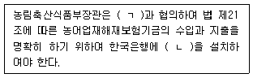
- ㄱ: 기획재정부장관, ㄴ: 보험계정
- ㄱ: 기획재정부장관, ㄴ: 기금계정
- ㄱ: 해양수산부장관, ㄴ: 보험계정
- ㄱ: 해양수산부장관, ㄴ: 기금계정
(정답률: 75%)
28. 농어업재해보험법 시행령에서 정하고 있는 다음 사항에 대한 과태료 부과기준액을 모두 합한 금액은?
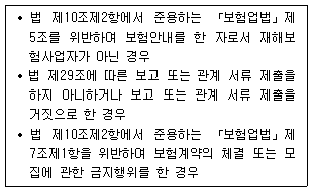
- 1,000만원
- 1,100만원
- 1,200만원
- 1,300만원
(정답률: 63%)
29. 농어업재해보험법령과 농업재해보험 손해평가요령상 다음의 설명 중 옳지 않은 것은?
- 손해평가사나 손해사정사가 아닌 경우에는 손해평가인이 될 수 없다.
- 농업재해보험 손해평가요령은 농림축산식품부고시의 형식을 갖추고 있다.
- 가축재해보험도 농업재해보험의 일종이다.
- 손해평가보조인이라 함은 손해평가 업무를 보조하는 자를 말한다.
(정답률: 73%)
30. 농어업재해보험법령상 “시범사업”을 하기 위해 재해보험사업자가 농림축산식품부장관에게 제출하여야 하는 사업계획서 내용에 해당하는 것을 모두 고른 것은?
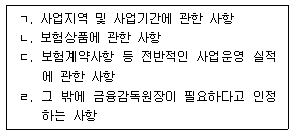
- ㄱ, ㄴ
- ㄱ, ㄷ
- ㄴ, ㄷ
- ㄴ, ㄹ
(정답률: 69%)
31. 농업재해보험 손해평가요령상 손해평가인의 업무가 아닌 것은?
- 손해액 평가
- 보험가액 평가
- 보험료의 평가
- 피해사실 확인
(정답률: 75%)
32. 농업재해보험 손해평가요령상 손해평가인의 교육에 관한 설명으로 옳지 않은 것은?
- 재해보험사업자는 위촉된 손해평가인을 대상으로 농업재해보험에 관한 손해평가의 방법 및 절차의 실무교육을 실시하여야 한다.
- 피해유형별 현지조사표 작성실습은 손해평가인 정기교육의 내용이다.
- 손해평가인 정기교육 시 농업재해보험에 관한 기초지식의 교육내용에는 농어업재해보험법제정 배경 및 조문별 주요내용 등이 포함된다.
- 위촉된 손해평가인의 실무교육 시 재해보험사업자에 대하여 손해평가인은 교육비를 지급한다.
(정답률: 74%)
33. 농업재해보험 손해평가요령상 재해보험사업자가 손해평가인 업무의 정지나 위촉의 해지를 할 수 있는 사항에 관한 설명으로 옳지 않은 것은?
- 손해평가인이 농업재해보험 손해평가요령의 규정을 위반한 경우 위촉을 해지할 수 있다.
- 손해평가인이 농어업재해보험법에 따른 명령을 위반한 때 3개월간 업무의 정지를 명할 수 있다.
- 부정한 방법으로 손해평가인으로 위촉된 경우 위촉을 해지할 수 있다.
- 업무수행과 관련하여 동의를 받지 않고 개인정보를 수집하여 개인정보보호법을 위반한 경우 3개월간 업무의 정지를 명할 수 있다.
(정답률: 43%)
34. 농업재해보험 손해평가요령상 손해평가반 구성에 관한 설명으로 옳은 것은?
- 손해평가인은 법에 따른 손해평가를 하는 경우 손해평가반을 구성하고 손해평가반별로 평가일정계획을 수립하여야 한다.
- 자기가 모집하지 않았더라도 자기와 생계를 같이하는 친족이 모집한 보험계약이라면 해당자는 그 보험계약에 관한 손해평가의 손해평가반 구성에서 배제되어야 한다.
- 자기가 가입하였어도 자기가 모집하지 않은 보험계약이라면 해당자는 그 보험 계약에 관한 손해평가의 손해평가반 구성에 참여할 수 있다.
- 손해평가반에는 손해평가인, 손해평가사, 손해사정사에 해당하는 자를 2인 이상 포함시켜야 한다.
(정답률: 68%)
35. 농어업재해보험법상 농어업재해에 해당하지 않는 것은?
- 농작물에 발생하는 자연재해
- 임산물에 발생하는 병충해
- 농업용 시설물에 발생하는 화재
- 농어촌 주민의 주택에 발생하는 화재
(정답률: 79%)
36. 농어업재해보험법령상 농업재해보험심의회의 심의사항에 해당하는 것을 모두 고른 것은?
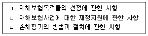
- ㄱ, ㄴ
- ㄱ, ㄷ
- ㄴ, ㄷ
- ㄱ, ㄴ, ㄷ
(정답률: 68%)
37. 농어업재해보험법령상 재해보험사업에 관한 내용으로 옳지 않은 것은?
- 재해보험사업을 하려는 자는 기획재정부장관과 재해보험사업의 약정을 체결하여야 한다.
- 재해보험의 종류는 농작물재해보험, 임산물재해보험, 가축재해보험 및 양식수산물재해보험으로 한다.
- 재해보험에 가입할 수 있는 자는 농림업, 축산업, 양식수산업에 종사하는 개인 또는 법인으로 한다.
- 재해보험에서 보상하는 재해의 범위는 해당 재해의 발생 빈도, 피해 정도 및 객관적인 손해평가방법 등을 고려하여 재해보험의 종류별로 대통령령으로 정한다.
(정답률: 74%)
38. 농어업재해보험법령상 재해보험사업을 할 수 없는 자는?
- 「수산업협동조합법」에 따른 수산업협동조합중앙회
- 「새마을금고법」에 따른 새마을금고중앙회
- 「보험업법」에 따른 보험회사
- 「산림조합법」에 따른 산림조합중앙회
(정답률: 79%)
39. 농어업재해보험법령상 재해보험사업 및 보험료율의 산정에 관한 설명으로 옳지 않은 것은?
- 재해보험사업의 약정을 체결하려는 자는 보험료 및 책임준비금 산출방법서 등을 농림축산식품부장관 또는 해양수산부장관에게 제출하여야 한다.
- 재해보험사업자는 보험료율을 객관적이고 합리적인 통계자료를 기초로 산정하여야 한다.
- 보험료율은 보험목적물별 또는 보상방식별로 산정한다.
- 보험료율은 대한민국 전체를 하나의 단위로 산정하여야 한다.
(정답률: 78%)
40. 농어업재해보험법령상 재해보험을 모집할 수 있는 자가 아닌 것은?
- 「수산업협동조합법」에 따라 설립된 수협은행의 임직원
- 「수산업협동조합법」의 공제규약에 따른 공제모집인으로서 해양수산부장관이 인정하는 자
- 「산림조합법」에 따른 산림조합중앙회의 임직원
- 「보험업법」제83조제1항에 따라 보험을 모집할 수 있는 자
(정답률: 59%)
41. 농어업재해보험법령상 손해평가사에 관한 설명으로 옳지 않은 것은?
- 농림축산식품부장관은 공정하고 객관적인 손해평가를 촉진하기 위하여 손해평가사 제도를 운영한다.
- 손해평가사 자격이 취소된 사람은 그 취소 처분이 있은 날부터 2년이 지나지 아니한 경우 손해평가사 자격시험에 응시하지 못한다.
- 손해평가사 자격시험의 제1차 시험은 선택형으로 출제하는 것을 원칙으로 하되, 단답형 또는 기입형을 병행할 수 있다.
- 보험목적물 또는 관련 분야에 관한 전문 지식과 경험을 갖추었다고 인정되는 대통령령으로 정하는 기준에 해당하는 사람에게는 손해평가사 자격시험 과목의 전부를 면제할 수 있다.
(정답률: 75%)
42. 농어업재해보험법령상 손해평가에 관한 설명으로 옳지 않은 것은?
- 재해보험사업자는 손해평가인을 위촉하여 손해평가를 담당하게 할 수 있다.
- 농림축산식품부장관 또는 해양수산부장관은 손해평가인 간의 손해평가에 관한 기술ㆍ정보의 교환을 지원할 수 있다.
- 농림축산식품부장관 또는 해양수산부장관은 손해평가인이 공정하고 객관적인 손해평가를 수행할 수 있도록 분기별 1회 이상 정기교육을 실시하여야 한다.
- 농림축산식품부장관 또는 해양수산부장관은 손해평가 요령을 고시하려면 미리 금융위원회와 협의하여야 한다.
(정답률: 75%)
43. 농어업재해보험법령상 재정지원에 관한 내용으로 옳지 않은 것은?
- 정부는 예산의 범위에서 재해보험사업자의 재해보험의 운영 및 관리에 필요한 비용의 전부 또는 일부를 지원할 수 있다.
- 「풍수해보험법」에 따른 풍수해보험에 가입한 자가 동일한 보험목적물을 대상으로 재해보험에 가입할 경우에는 정부가 재정지원을 하지 아니한다.
- 보험료와 운영비의 지원 방법 및 지원 절차 등에 필요한 사항은 대통령령으로 정한다.
- 지방자치단체는 예산의 범위에서 재해보험가입자가 부담하는 보험료의 일부를 추가로 지원할 수 있으며, 지방자치단체의 장은 지원금액을 재해보험가입자에게 지급하여야 한다.
(정답률: 67%)
44. 농업재해보험 손해평가요령상 손해평가준비 및 평가결과 제출에 관한 설명으로 옳지 않은 것은?
- 재해보험사업자는 손해평가반이 실시한 손해평가결과를 기록할 수 있는 현지조사서를 마련해야 한다.
- 손해평가반은 보험가입자가 정당한 사유없이 손해평가를 거부하여 손해평가를 실시하지 못한 경우에는 그 피해를 인정할 수 없는 것으로 평가한다는 사실을 보험가입자에게 통지한 후 현지조사서를 재해보험사업자에게 제출하여야 한다.
- 보험가입자가 정당한 사유없이 손해평가반이 작성한 현지조사서에 서명을 거부한 경우에 는 손해평가반은 그 피해를 인정할 수 없는 것으로 평가한다는 현지조사서를 작성하여 재해보험사업자에게 제출하여야 한다.
- 보험가입자가 손해평가반의 손해평가결과에 대하여 설명 또는 통지를 받은 날로부터 7일이내에 손해평가가 잘못되었음을 증빙하는 서류 또는 사진 등을 제출하는 경우 재해보험 사업자는 다른 손해평가반으로 하여금 재조사를 실시하게 할 수 있다.
(정답률: 59%)
45. 농업재해보험 손해평가요령상 보험목적물별 손해평가의 단위로 옳은 것을 모두 고른 것은?
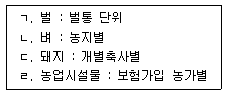
- ㄱ, ㄴ
- ㄱ, ㄷ
- ㄴ, ㄹ
- ㄷ, ㄹ
(정답률: 72%)
46. 농업재해보험 손해평가요령상 농작물의 보험가액 산정에 관한 설명이다. ( )에 들어 갈 내용으로 옳은 것은?
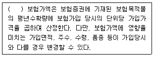
- 종합위험방식
- 적과전종합위험방식
- 생산비보장
- 특정위험방식
(정답률: 68%)
47. 농어업재해보험법령상 정부의 재정지원에 관한 설명이다. ( )에 들어갈 내용으로 옳은 것은?
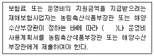
- 현지조사서
- 재해보험 가입현황서
- 보험료 사용계획서
- 기금결산보고서
(정답률: 67%)
48. 농업재해보험 손해평가요령상 농업시설물의 보험가액 산정에 관한 설명이다. ( )에 들어갈 내용으로 옳은 것은?
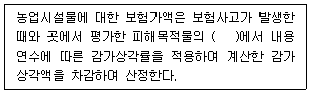
- 재조달가액
- 보험가입금액
- 원상복구비용
- 손해액
(정답률: 69%)
49. 농업재해보험 손해평가요령상 종합위험방식 상품에서 조사내용으로 「피해과실 수 조사」를 하는 품목은?
- 복분자
- 오디
- 감귤
- 단감
(정답률: 45%)
50. 농업재해보험 손해평가요령상 특정위험방식 상품 중 「발아기∼적과 전」생육시기에 우박으로 인한 손해수량의 조사내용인 것은?
- 나무피해 조사
- 유과타박률 조사
- 낙엽피해 조사
- 수확량 조사
(정답률: 69%)
3과목: 재배학 및 원예작물학
51. 과실의 구조적 특징에 따른 분류로 옳은 것은?
- 인과류 - 사과, 자두
- 핵과류 - 복숭아, 매실
- 장과류 - 포도, 체리
- 각과류 - 밤, 키위
(정답률: 59%)
52. 토양 입단 형성에 부정적 영향을 주는 것은?
- 나트륨 이온 첨가
- 유기물 시용
- 콩과작물 재배
- 피복작물 재배
(정답률: 73%)
53. 작물재배에 있어서 질소에 관한 설명으로 옳은 것은?
- 벼과작물에 비해 콩과작물은 질소 시비량을 늘여주는 것이 좋다.
- 질산이온(NO3-)으로 식물에 흡수된다.
- 결핍증상은 노엽(老葉)보다 유엽(幼葉)에서 먼저 나타난다.
- 암모니아태 질소비료는 석회와 함께 시용하는 것이 효과적이다.
(정답률: 59%)
54. 식물체 내 물의 기능을 모두 고른 것은?
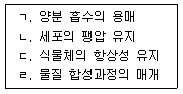
- ㄱ, ㄴ
- ㄱ, ㄷ, ㄹ
- ㄴ, ㄷ, ㄹ
- ㄱ, ㄴ, ㄷ, ㄹ
(정답률: 71%)
55. 토양 습해 대책으로 옳지 않은 것은?
- 밭의 고랑재배
- 땅속 배수시설 설치
- 습답의 이랑재배
- 토양개량제 시용
(정답률: 71%)
56. 작물재배 시 한해(旱害) 대책을 모두 고른 것은?
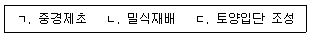
- ㄱ, ㄴ
- ㄱ, ㄷ
- ㄴ, ㄷ
- ㄱ, ㄴ, ㄷ
(정답률: 66%)
57. 다음 ( )에 들어갈 내용을 순서대로 옳게 나열한 것은?
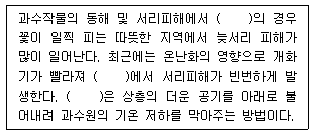
- 사과나무, 장과류, 살수법
- 배나무, 핵과류, 송풍법
- 배나무, 인과류, 살수법
- 사과나무, 각과류, 송풍법
(정답률: 67%)
58. 작물의 생육적온에 관한 설명으로 옳지 않은 것은?
- 대사작용에 따라 적온이 다르다.
- 발아 후 생육단계별로 적온이 있다.
- 품종에 따른 차이가 존재한다.
- 주간과 야간의 적온은 동일하다.
(정답률: 79%)
59. 다음 ( )의 내용을 순서대로 옳게 나열한 것은?
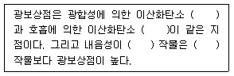
- 방출량, 흡수량, 약한, 강한
- 방출량, 흡수량, 강한, 약한
- 흡수량, 방출량, 약한, 강한
- 흡수량, 방출량, 강한, 약한
(정답률: 64%)
60. 우리나라 우박 피해로 옳은 것을 모두 고른 것은?
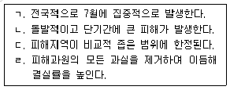
- ㄱ, ㄹ
- ㄴ, ㄷ
- ㄴ, ㄷ, ㄹ
- ㄱ, ㄴ, ㄷ, ㄹ
(정답률: 71%)
61. 다음이 설명하는 재해는?
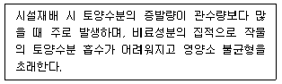
- 한해
- 습해
- 염해
- 냉해
(정답률: 65%)
62. 과수재배에 이용되는 생장조절물질에 관한 설명으로 옳지 않은 것은?
- 삽목 시 발근촉진제로 옥신계 물질을 사용한다.
- 사과나무 적과제로 옥신계 물질을 사용한다.
- 씨없는 포도를 만들 때 지베렐린을 사용한다.
- 사과나무 낙과방지제로 시토키닌계 물질을 사용한다.
(정답률: 61%)
63. 다음이 설명하는 것은?
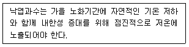
- 경화
- 동화
- 적화
- 춘화
(정답률: 59%)
64. 재래육묘에 비해 플러그육묘의 장점이 아닌 것은?
- 노동ㆍ기술집약적이다.
- 계획생산이 가능하다.
- 정식 후 생장이 빠르다.
- 기계화 및 자동화로 대량생산이 가능하다.
(정답률: 74%)
65. 육묘 재배의 이유가 아닌 것은?
- 과채류 재배 시 수확기를 앞당길 수 있다.
- 벼 재배 시 감자와 1년 2작이 가능하다.
- 봄결구배추 재배 시 추대를 유도할 수 있다.
- 맥류 재배 시 생육촉진으로 생산량 증가를 기대할 수 있다.
(정답률: 64%)
66. 삽목번식에 관한 설명으로 옳지 않은 것은?
- 과수의 결실연령을 단축시킬 수 있다.
- 모주의 유전형질이 후대에 똑같이 계승된다.
- 종자번식이 불가능한 작물의 번식수단이 된다.
- 수세를 조절하고 병해충 저항성을 높일 수 있다.
(정답률: 70%)
67. 담배모자이크바이러스의 주요 피해작물이 아닌 것은?
- 가지
- 사과
- 고추
- 배추
(정답률: 55%)
68. 식용부위에 따른 분류에서 엽경채류가 아닌 것은?
- 시금치
- 미나리
- 마늘
- 오이
(정답률: 58%)
69. 다음 ( )의 내용을 순서대로 옳게 나열한 것은?
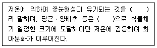
- 춘화, 종자춘화형
- 이춘화, 종자춘화형
- 춘화, 녹식물춘화형
- 이춘화, 녹식물춘화형
(정답률: 65%)
70. 다음 두 농가가 재배하고 있는 품목은?
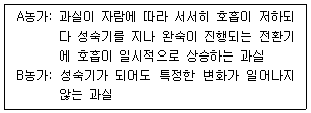
- A농가: 사과, B농가: 블루베리
- A농가: 살구, B농가: 키위
- A농가: 포도, B농가: 바나나
- A농가: 자두, B농가: 복숭아
(정답률: 63%)
71. 도로건설로 야간 조명이 늘어나는 지역에서 개화 지연에 대한 대책이 필요한 화훼작물은?
- 국화, 시클라멘
- 장미, 페튜니아
- 금어초, 제라늄
- 칼랑코에, 포인세티아
(정답률: 43%)
72. A농가에서 실수로 2℃ 에 저장하여 저온장해를 받게 될 품목은?
- 장미
- 백합
- 극락조화
- 국화
(정답률: 59%)
73. A농가의 하우스 오이재배 시 낙과가 발생하였다. B손해평가사가 주요 원인으로 조사할 항목은?
- 유인끈
- 재배방식
- 일조량
- 탄산시비
(정답률: 66%)
74. 수경재배에 사용 가능한 원수는?
- 철분 함량이 높은 물
- 나트륨, 염소의 함량이 100 ppm이상인 물
- 산도가 pH 7에 가까운 물
- 중탄산 함량이 100 ppm 이상인 물
(정답률: 62%)
75. 시설재배에서 연질 피복재가 아닌 것은?
- 폴리에틸렌필름
- 폴리에스테르필름
- 염화비닐필름
- 에틸렌아세트산비닐필름
(정답률: 62%)